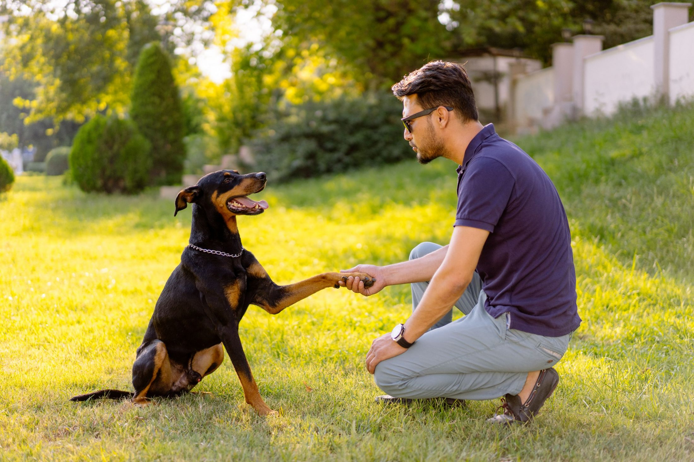

Training pets is an essential part of building a strong bond and ensuring they are well-behaved and happy.Start early, keep sessions short and fun, and reward desired behaviors with treats or praise. Use the same commands consistently and gradually increase difficulty as your pet learns. With time, patience, and lots of positive reinforcement, you’ll have a well-trained and happy pet!
The earlier you begin training, the better! Puppies and kittens are ideal candidates for learning basic commands, but older pets can also be trained with patience and consistency.
Rewarding good behavior with treats, praise, or play encourages your pet to repeat those behaviors. This builds a trusting, positive relationship.
Pets, especially young ones, have short attention spans. Keep sessions to about 5-10 minutes and end on a positive note. This prevents frustration and helps your pet stay engaged.
Consistency is key. Use the same commands, rewards, and training techniques every time. This helps your pet understand what’s expected of them.
Training takes time, and every pet learns at their own pace. Stay calm and patient, especially when things don’t go as planned. Avoid punishment, as it can cause fear and anxiety.
Start with simple commands like “sit” or “stay,” then gradually move on to more complex tasks. Challenge your pet, but don't overwhelm them.